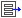

Clack Router Lab: IP & Routing Concepts
With questions contact: danwent@gmail.com
With questions contact: danwent@gmail.com
You will be using Clack to complete an online lab that is broken into three separate sections, each of which you can submit independently. We highly encourage you to use Clack to explore course concepts beyond what is required for this lab.
To launch the Clack Graphical Router, click Launch Clack in a new window/tab in any Java 1.4 enabled browser (e.g. your personal computer, or Andrew machines). After starting Clack, you must specify a topology file, which describes the network topology and host configuration for your virtual network. The topology file needed for Lab Sections 1 & 2 will be sufficient to let you begin to explore Clack during the brief intro on this page. It can be downloaded here .
After loading Clack, select File -> Open  and choose the topology file.
To save your progress configuring the network hosts (as well as any
graphical changes you may have made), select File -> Save All
and choose the topology file.
To save your progress configuring the network hosts (as well as any
graphical changes you may have made), select File -> Save All
 to create an updated topology file (Note: just
using "Save" is insufficient for this lab).
to create an updated topology file (Note: just
using "Save" is insufficient for this lab).
 |
 | |
| figure: main network view | figure: a single host's routing table, from network view |
It is important to understand the topology of the network before thinking about what is happening in a particular router or end-host. The network view shows your network as a set of routers and hosts, connected by network links. Links flash green when they carry packets. The network view also lets you view the routing tables of all nodes at once to easily see how packet forwarding decisions are made.
A condensed version of each host's routing tables can be viewed/hidden by toggling the  button within the network view. As seen above, the routing table lists the destination network prefix, the outgoing interface, as well as the last "octet" (ie: byte) of the next-hop for that routing entry, if a next-hop exists.

Double-clicking on a router or host, you can zoom in to see the internals of the router. This view breaks each piece of router functionality into distinct blocks called components. Components have different "ports", which are connected by wires that carry packets between components. Wires light up when packets are passed along them.
Most components just receive packets from other components, and either drop them or pass them on (possibly after modifying the packet). There are a few special blocks: The gray interface blocks at the top of the view represent the input interfaces of the router. Packets enter the router at this point, and exit it at the gray output interfaces at the bottom. The dark gray vertical boxes right above the output interfaces are packet buffers.
To find out more about the operation of each block and
its connections to other components, double-click on the component and explore
its ''properties view''. Property Views contain HTML descriptions of each
component, as well as other statistics, and configuration information.
To return to the network view, use the zoom-out
 button.
button.

The router view let's you see what components interact, but not what is inside the packets. For this, we provide a clone of the popular networking tool ethereal. At any point you can see all of the packets sent to and from particular host (on any interface) by clicking on the ethereal icon, and choosing a particular host to sniff on. Packets are recorded once when arriving at an input interface, and once when leaving an interface.
This lab places you in a job as a network engineer for a fledgling small company. Your first day on the job, you find out that your predecessor quit without finishing the company's network set-up. It is your task to finish the job. You boss hands you the following diagram sketching out the desired network:
Your boss tells you that the company's three routers are already wired up to each other, but each of the desired subnets only contains a single computer. (the rest are on back-order). This makes your configuration easier for now, but you need to set-up everything in preparation for the eventual subnet sizes. He also mentions that the ISP has configured the interface on your company's border router with an IP from the ISP's address space, and has also added a default route going out that interface for Internet traffic. Finally, your boss tells you that your company has only been allocated the 177.66.55.0/24 address block, so you will have conserve IP space when assigning address ranges to each of the subnets and to the internal router interfaces.
This lab first covers some questions to make sure you are solid on the basic Internet protocols (Section 1) before requiring you to set-up and debug the network (Section 2). Finally, you will explore some advanced routing topics to prepared for your network to grow even larger (Section 3).
Section 1: Basics of Ethernet, ARP, and IPYou will be able to submit you work at the end of each section. The configuration work in Section 2 may be time consuming, so you can save that work locally and come back to it later (see above). You can submit multiple times but only your last submission will be counted .
This Clack network is not connected to the Internet, so you will have to
generate traffic using the command-shell that let's you "log-in" to
different hosts in your network. To use the command-line, select
the  icon, and choose the host you want to access.
icon, and choose the host you want to access.
Type '?' to see all of the commands available in the shell. To generate traffic, use the 'ping' command, followed by the IP address that you want to contact. (Hint: to quickly change between different hosts using the same shell, type ! immediately followed by the new hostname, for example, '!router1').
Reconfiguring a host is as simple as accessing that host's router view, finding the component that holds that state, opening the property view, and changing the values. For example, to change an IP address and subnet mask, open the property view of one of the interface components (ie: FromDevice, or ToDevice).
A faster way to reconfigure components is to use command-line utilities, which mimic those provided by Unix. For example, interfaces can be configured using ifconfig and routes can be added to a routing table using route. Run these applications with the -h flag for exact usage guidelines.
If your network is partially, or incorrectly, configured and you attempt to send packets across it, you are likely to cause some network error conditions. What are examples of an error? A routing table given a packet with a destination IP that does not match any entry, an ARP lookup that receives no response, or a packet with a TTL of zero.
Clack makes it easier for you to find such errors when they occur in your network. If you are currently at the network view and an error occurs inside a host, that host will become outlined in red. When you zoom into that host, one of the components will be outlined in red, indicating that it caused the error. Double-click the component to see its property-view, and access the 'log' tab to see the error message that caused the error. Any packet that is dropped will be indicated by an error.
If packets are being sent, but the behavior is not what is expected, use the packet-level view to analyze packet contents. Also, you can use the controls on the right, a "play" button, "pause" button, and speed slider, to stop or slow the flow of packets to see things more easily.